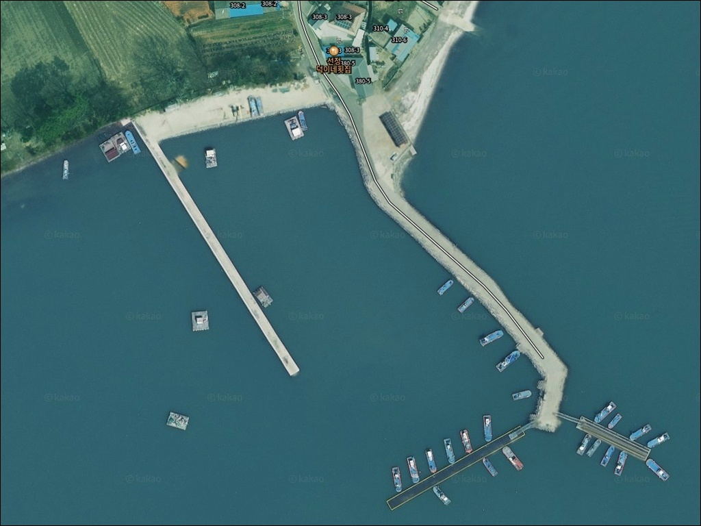
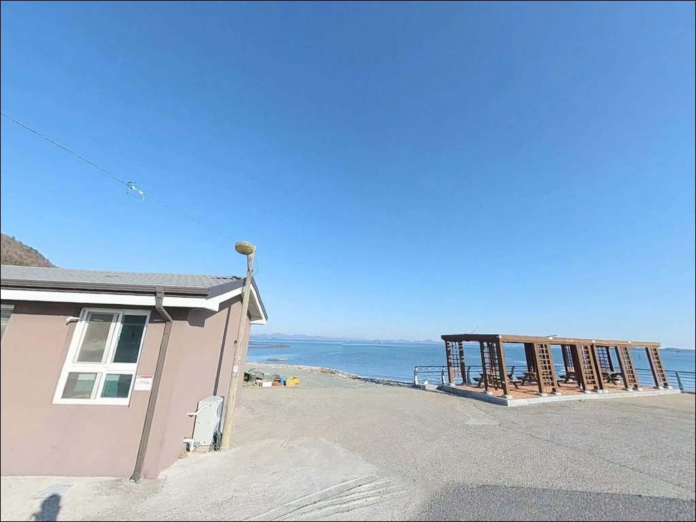
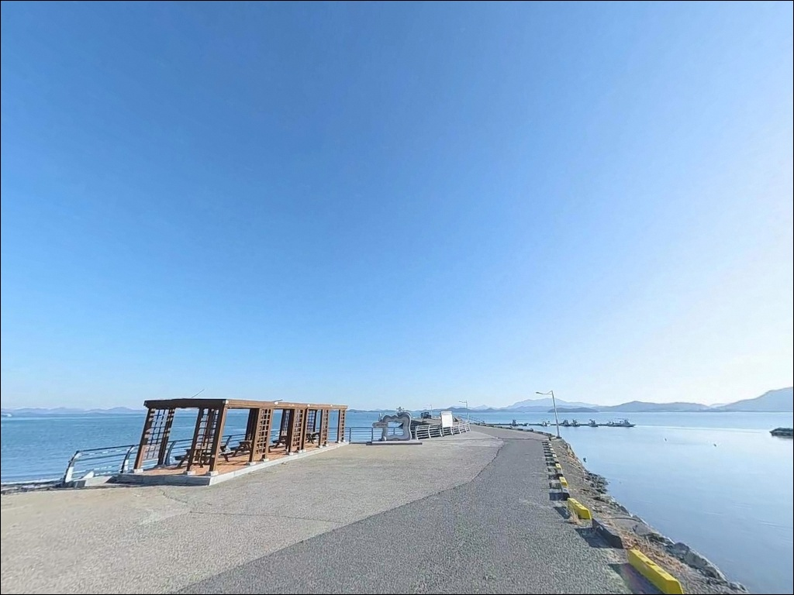
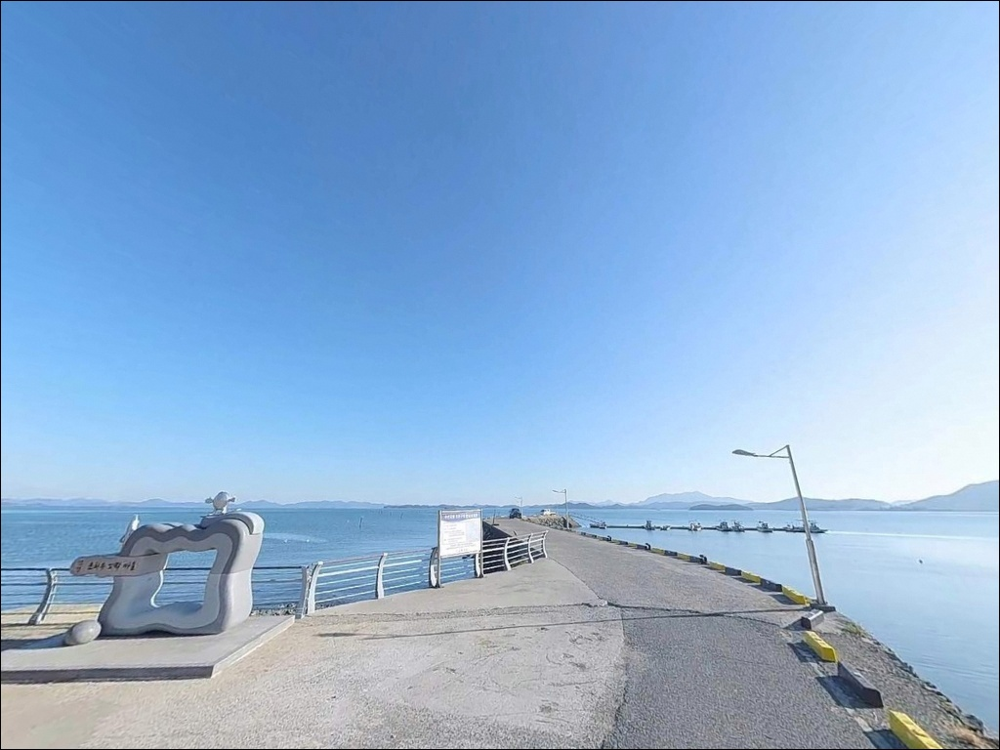
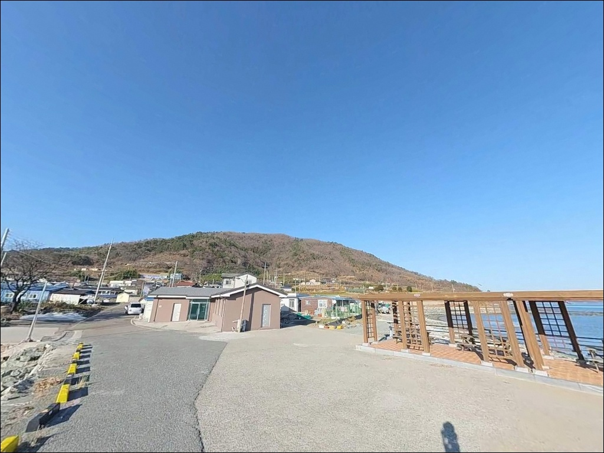
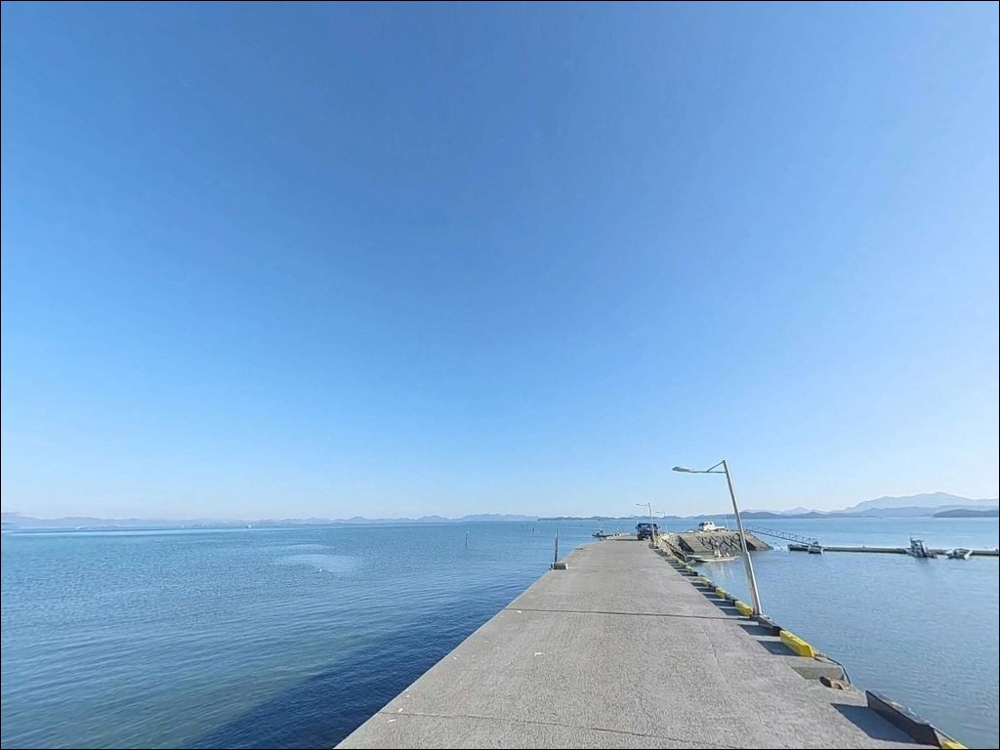
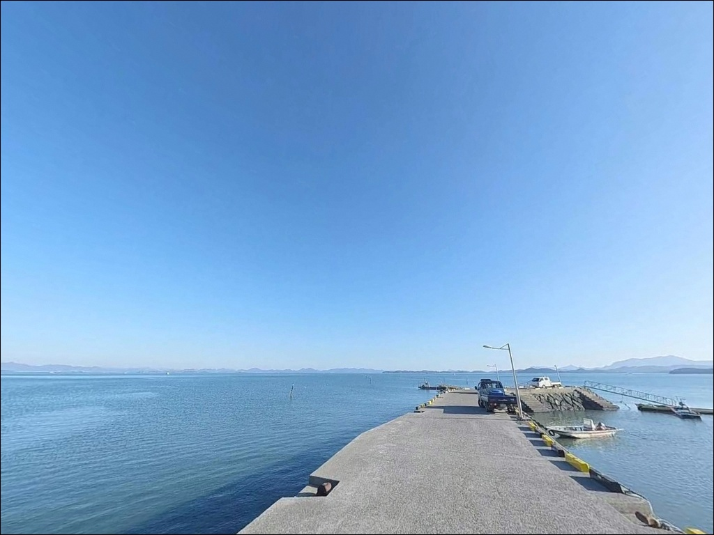
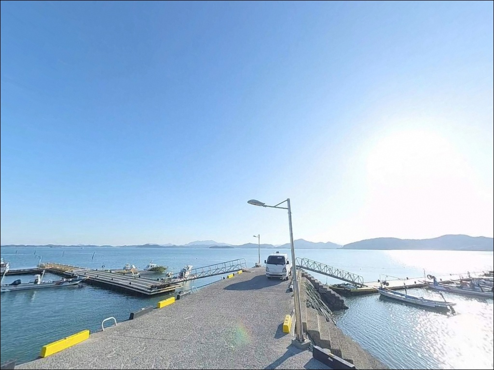
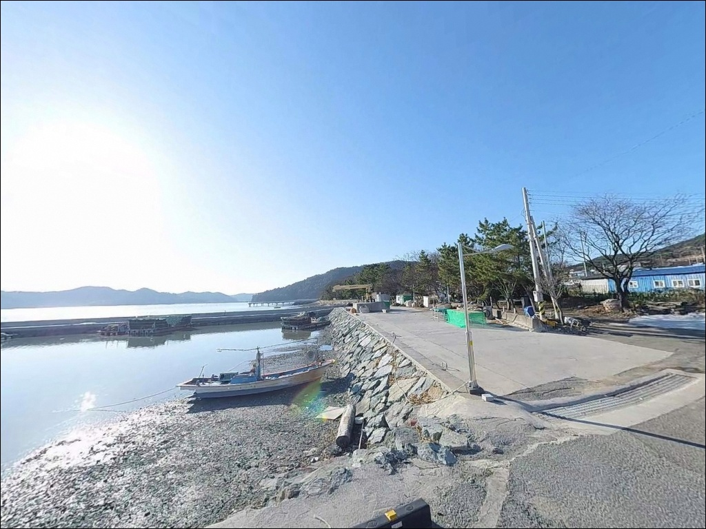

고흥 월정방파제 원투낚시, 만조 전후 2시간에만 살아나는 입질


포인트 안내
월정방파제
전남 고흥군 남양면 월정리 651-1
득량만 안쪽 방파제에서
간조 시간대에 도착하면
수심이 빠져 채비를 던질 자리 자체가 없습니다.
월정방파제는 조석 간만의 차가 큰 내만형 포인트로,
만조 전후 2시간을 놓치면
헛걸음으로 끝나는 구조입니다.
전남 고흥군 남양면 월정리,
득량만 내측 깊숙이 위치한 이 방파제는
공식 어촌정주어항으로 등록된 월정항입니다.
파도의 영향이 거의 없는 잔잔한 지형이라
원투낚시와 에깅을 겸한
조용한 생활낚시터로 지역 내 인지도가 있습니다.
이 글은 월정방파제의
진입 환경, 차박 여건, 물때 판단 기준,
지형 기반 낚시 여건에 집중합니다.
조황 단정이나 특정 어종 보장은
이 글의 범위에 포함되지 않습니다.

1. 진입 동선과 포인트 접근성
월정리는 남양면 소재지에서
해안도로를 따라 접근하는 구조입니다.
진입로 상태는 전반적으로 양호한 편이며,
방파제 시작 지점까지 차량 진입이 어렵지 않습니다.
마을 구간에서 도로 폭이 다소 좁아지는 구간이 있지만,
소형~중형 차량이라면 진입에 큰 무리가 없는 수준입니다.
방파제 입구 정면에는 공터가 넓게 펼쳐져 있습니다.
약 10대 이상의 차량이 주차 가능한 규모이며,
대형 캠핑카나 트레일러도 자유롭게 회차할 수 있는 부지입니다.
바다를 정면으로 마주하는 구조여서
차에서 내리자마자 방파제까지
이동 동선이 짧은 것이 장점입니다.
내항 선착장 주변 노면에도
어구 적재 공간을 피해 주차할 수 있는 공간이 있습니다.
어선 접안 동선과 겹치지 않도록
자리를 확인하고 주차하는 것이 기본 매너입니다.

2. 차박 환경과 야간 체류 여건
월정방파제 입구 공터는
바다를 정면으로 마주하는 구조로,
차박을 겸한 체류에 적합한 배치입니다.
가로등이 설치되어 있어 야간에도
기본적인 시야 확보가 가능하며,
조명 장비 없이도 최소한의 야간 활동이 가능한 환경입니다.
득량만 내측 지형 특성상 파도 소음이 거의 없어
야간 체류 환경이 조용한 편입니다.
마을과 적당한 거리를 두고 있어
소음 민원 가능성이 낮은 편이지만,
민가와 완전히 분리된 구조는 아니므로
야간 소음과 조명 사용에는 배려가 필요합니다.
방파제 인근 해안에는
전라남도 기념물로 지정된 해안방풍림이 조성되어 있습니다.
이팝나무·팽나무 혼합림으로 구성된 이 방풍림은
조선시대에 조성된 역사적 가치를 지닌 식생입니다.
바람이 강한 날에는 방풍림이
자연 방풍 역할을 하여 체류 환경을 안정시켜 주는 편입니다.


3. 주변 편의시설 및 인프라 현황
선착장 입구 인근에 공중화장실이 위치합니다.
지자체 관리 시설로 낚시 체류 중 기본 편의를 해결할 수 있습니다.
방파제 주변에 도보 거리의 편의점은 없으므로
식수, 얼음, 낚시 소품은 출발 전에 준비하는 것이 기본입니다.
남양면 소재지는 차량으로 약 5분 거리에 있습니다.
농협 하나로마트와 식당이 자리하고 있어
부족한 식재료나 소품을 보충하는 데 활용할 수 있습니다.
주유소와 대형 편의점이 필요하다면
고흥읍 방향으로 이동해야 합니다.

4. 물때를 중심으로 한 방문 전 준비사항
월정방파제에서 가장 먼저 챙길 것은 물때입니다.
득량만 내측은 조석 간만의 차가 크고
간조 시에는 넓은 갯벌이 드러나
방파제 전면에서 낚시 자체가 불가능해집니다.
바다타임에서 남양면 월정리 기준 물때를 확인하고
만조 전후 2시간을 중심으로 출발 시각을 설정하는 것이
방문 성패를 가르는 조건입니다.
내만형 포인트라 외해 파도 직격은 없지만
기상에 따라 바람이 강해지는 날이 있습니다.
기상청 해양날씨 예보를 당일 아침에 한 번 더 확인하고
풍속 기준을 체크한 뒤 출발하는 편이 좋습니다.
뻘바닥 지형에서 원투낚시를 운영할 경우
밑걸림은 적은 편이지만
채비 교체 상황에 대비해
여분 채비는 충분히 준비하는 것이 기본입니다.
야간 낚시 시에는 방파제 끝단 가장자리에
헤드랜턴과 구명조끼를 반드시 착용해야 합니다.

5. 득량만 내해 지형이 만드는 낚시 여건
월정방파제는 득량만 내측 깊숙이 자리한 포인트입니다.
외해 직격형 방파제가 아니라
만 안쪽의 흐름을 받는 내해형 구조여서
수면이 호수처럼 잔잔한 날이 많습니다.
바닥 지형은 뻘과 모래가 섞인 사질대에
간헐적인 암반이 분포하며,
밑걸림 빈도가 낮아 원투낚시 운영에 유리한 조건입니다.
수심은 만조 기준 방파제 끝단에서 3~6m 내외입니다.
조석 간만의 차가 크므로 간조 시에는
수심이 현저히 낮아지거나 바닥이 드러나는 구간이 생깁니다.
방파제 끝단 외항 방향이 내항보다 수심이 깊고,
수심 변화 폭이 커서 만조 타이밍 집중이 핵심입니다.
뻘바닥 지형에서는 저서성 어종의 이동 경로가 형성되며,
가을 시즌에는 갑오징어와 주꾸미의 내만 진입이 기대되는 구조입니다.
만조 타임에 방파제 외항 방향으로 채비를 보낸 뒤
천천히 바닥을 탐색하는 방식이 이 포인트에 잘 맞습니다.
출조 전에 월정항·남양면 일대 조황을 먼저 검색해 보시기 바랍니다.


6. 지형에 어울리는 낚시 스타일별 접근법
원투낚시는 이 포인트에서 가장 기본이 되는 방식입니다.
방파제 끝단에서 외항 방향으로 장거리 캐스팅하면
뻘바닥 지형의 도다리, 보리멸, 망둥어를 기대해볼 수 있습니다.
바닥이 비교적 매끄러워 채비 손실 빈도가 낮은 편이며,
만조 전후 2시간 안에 집중적으로 운영하는 것이 효율적입니다.
에깅은 가을 시즌 이 포인트에서 주목할 만한 방식입니다.
득량만 내측으로 가을철 갑오징어와 주꾸미가 진입하는 길목이며,
방파제 외항 전면을 넓게 탐색하는 운영이 기본입니다.
야간에는 석축 주변에서
소형 지그헤드를 활용한 볼락과 우럭 루어낚시도
암반 분포 구간을 중심으로 시도해볼 수 있습니다.
민물대를 활용한 찌낚시도 고려해볼 수 있는 방식입니다.
득량만 내측에서 바닷물과 민물이 만나는 지점이 형성되어
숭어 찌낚시나 망둥어 낚시에 유리한 구조입니다.
만조 전후 방파제 외항 석축 근처에서
소형 감성돔을 기대해볼 수 있는 가을이 주 시즌입니다.

7. 대안 포인트와 플랜 B 동선
물때가 맞지 않거나 방파제 여건이 여의치 않을 때는
남양면 중산리 방파제가 첫 번째 대안입니다.
같은 득량만 지형이지만
수심이 조금 더 안정적인 편이어서
원투낚시 운영 여건이 비슷하게 유지됩니다.
차박 환경을 더 중시한다면
중산일몰전망대 주차장이 좋은 대안입니다.
화장실과 전망 시설이 갖춰진 공식 주차장으로,
주차 공간이 넉넉하고 민가와 거리가 있어
차박 프라이버시 측면에서 안정적인 구조입니다.
중산리 일몰 포인트가 인접해 있어
연계 관광이 가능한 것도 장점입니다.
고흥만방조제 낚시 포인트는
뻘바닥 지형과 조류 방향이 유사한 해역에 있어
같은 낚시 방식으로 운영 가능한 대안입니다.
감성돔·도다리·학꽁치 원투낚시로
이 일대에서 인지도가 있는 포인트입니다.

물때 한 번만 맞추면
월정방파제가 조용한 포인트로 바뀝니다
에깅이나 원투낚시를 즐기는 낚시인이라면
월정방파제의 조건은 나쁘지 않습니다.
득량만 내측의 잔잔한 수면, 뻘바닥 지형,
가을 시즌 갑오징어 진입 패턴이
복합 공략을 가능하게 하는 구조입니다.
주차 공간이 넓고 화장실이 갖춰져 있어
원거리 출조의 피로도도 낮은 편입니다.
반면 물때 확인 없이 찾아가거나
간조 전후에 도착하면
낚시 자리가 갯벌로 바뀐 현장을 마주하게 됩니다.
물때 확인, 만조 기준 출발 시각 계산, 식수와 소품 사전 준비,
이 세 가지가 갖춰진 출조라면
기억에 남을 조용한 포인트가 될 수 있는 곳입니다.
해안방풍림이 바람을 막아주는 공터에서 하룻밤 머물며
만조 타이밍에 에기를 던지는 차박 낚시 여행자라면,
월정방파제는 득량만 조용한 내해를 만끽할 수 있는
출조가 될 수 있습니다.